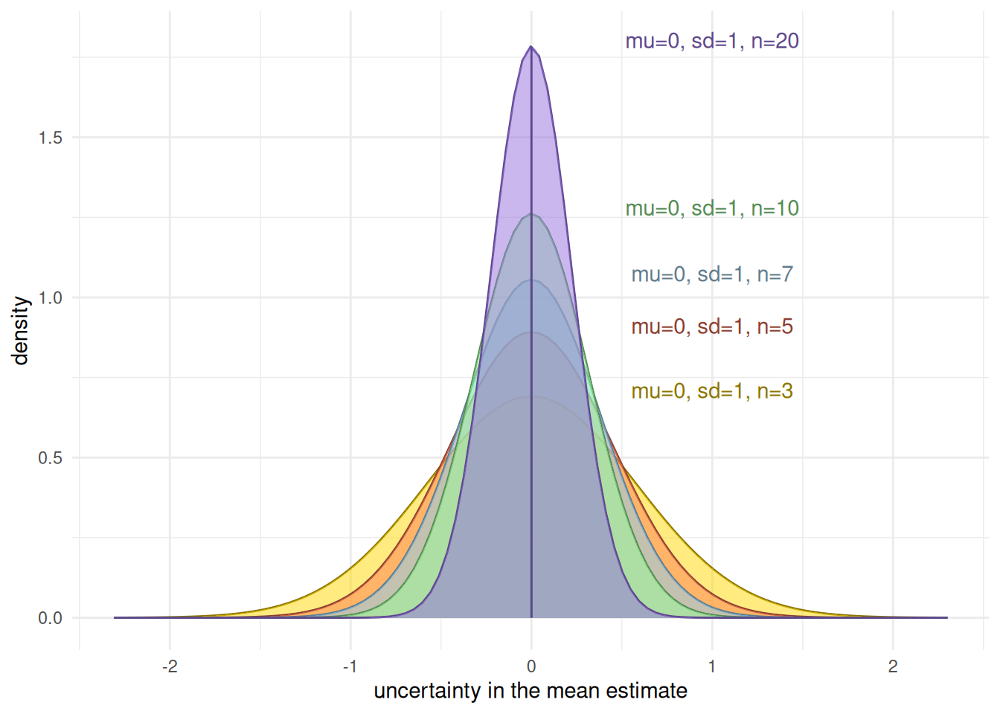
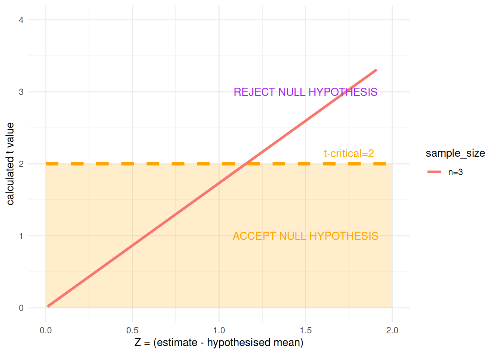
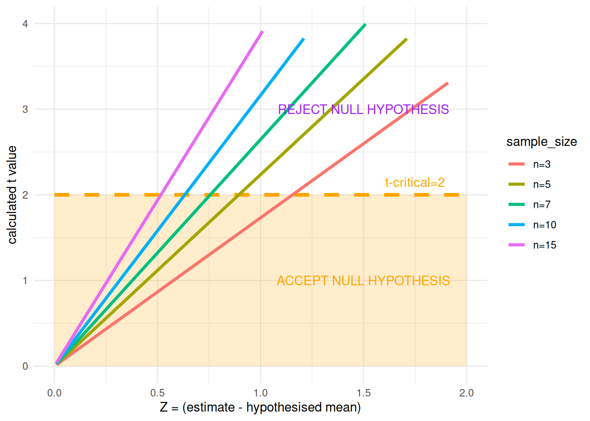

Attaching package: 'dplyr'The following objects are masked from 'package:stats':
filter, lagThe following objects are masked from 'package:base':
intersect, setdiff, setequal, unionLoading required package: ggplot2
Attaching package: 'dplyr'The following objects are masked from 'package:stats':
filter, lagThe following objects are masked from 'package:base':
intersect, setdiff, setequal, unionLoading required package: ggplot2We cannot make an infinite number of measurements of \(z\). We can only take a sample.
The mean and standard deviation we estimate in an experiment will not match those of the infinitely large population.
The standard error of the mean reflects the uncertainty in our estimate of the mean.
When estimating the mean of an infinite population, given a simple random sample of size \(n\), the standard error is:
\[ \textrm{standard error} = \sqrt{\frac{\textrm{Variance}}{n}} = \frac{\textrm{standard deviation}}{\sqrt{n}} = \frac{\sigma}{\sqrt{n}} \]
When we perform an experiment we measure a limited number of values
For statistical analysis, we consider that these values are randomly drawn from a random distribution containing an infinite number of values
The mean, standard deviation, and other values we measure in our experiment will not match the true mean, standard deviation, or whatever of the full infinite distribution
We can, though, estimate our confidence in our estimate of the mean by the standard error of the mean, which reflects the uncertainty in our estimate of the true mean of the infinite distribution.
The standard error of the mean is the standard deviation divided by the square root of sample size
Uncertainty in the mean estimate \(\mu\) reduces proportionally to the square root of the number of samples, \(n\)
# Plots assuming mu = 0, sd = 1
# So the progressive standard errors are:
# (n=3, sd=1/3), (n=5, sd=1/5), (n=7, sd=1/7), (n=10, sd=1/10), (n=20, sd=1/20)
ggplot() +
shaded_normal(mu=0, sd=1/sqrt(3), zstart=0, zend=1, label="mu=0, sd=1, n=3",
textyoffset = 1, fill="gold", color="gold4") +
shaded_normal(mu=0, sd=1/sqrt(5), zstart=0, zend=1, label="mu=0, sd=1, n=5",
textyoffset = 1, fill="coral", color="coral4") +
shaded_normal(mu=0, sd=1/sqrt(7), zstart=0, zend=1, label="mu=0, sd=1, n=7",
textyoffset = 1, fill="lightskyblue", color="lightskyblue4") +
shaded_normal(mu=0, sd=1/sqrt(10), zstart=0, zend=1, label="mu=0, sd=1, n=10",
textyoffset = 1, fill="palegreen", color="palegreen4") +
shaded_normal(mu=0, sd=1/sqrt(20), zstart=0, zend=1, label="mu=0, sd=1, n=20",
textyoffset = 1, fill="mediumpurple", color="mediumpurple4") +
xlab("uncertainty in the mean estimate") + ylab("density") +
theme_minimal()
To visualise this, we can plot the distribution of our uncertainty in the estimate of the mean, where we’ve estimated that the mean is zero and the standard deviation is one, for a range of sample sizes, n
At \(n=3\), the uncertainty in our estimate is quite flat and broad
As we increase the number of samples \(n\), the uncertainty narrows, and the density of the distribution of estimates starts to gather more around the central value of our estimate of the mean.
This property holds regardless of our assumptions about the shape of the sampling distribution
\[ t = \frac{Z}{s} = \frac{Z}{\sigma/\sqrt{n}} \]
\[ t = \frac{Z}{s} = \frac{\bar{X} - \mu}{\hat{\sigma}/{\sqrt{n}}} = \frac{\bar{X} - \mu}{s(\bar{X})} \]
\[ \sqrt{W} = \frac{Z}{s} = \frac{\hat{\theta} - \theta_0}{s(\hat{\theta})} \]
You may have come across the t-test before?
The t-statistic \(t\) is calculated as \(Z/s\) where \(Z\) is the difference between the estimated mean and the hypothesised population mean (the thing you are testing for equality to), and \(s\) is the standard error of the estimate of the mean.
You’ll likely not have come across the Wald test?
But it follows the same form
The standard error is influenced by (gets smaller with) the square root of sample size in both cases
\[ t = \frac{Z}{s} = \frac{Z}{\sigma/\sqrt{n}} \]
So what happens if we hold \(Z\) and \(\sigma\) constant (i.e. we estimate the same difference from our hypothesised mean value), but vary the number of samples?
So as \(n\) increases, the standard error \(\sigma/{\sqrt{n}}\) gets smaller
\(Z\) however remains the same size, so the \(t\) statistic gets larger (for the same value of \(Z\)).
# Assuming sd=1
# z is the difference between the estimate and the hypothesised mean
# The t-values correspond to: (t1, 3), (t2, 5), (t3, 7), (t4, 10), (t5, 15)
dfm <- data.frame(z=seq(0.01, 2, by=0.1)) %>%
mutate(t1=z/(1/sqrt(3))) %>%
mutate(t2=z/(1/sqrt(5))) %>%
mutate(t3=z/(1/sqrt(7))) %>%
mutate(t4=z/(1/sqrt(10))) %>%
mutate(t5=z/(1/sqrt(15))) %>%
pivot_longer(cols=c(t1, t2, t3, t4, t5),
names_to="sample_size",
values_to="t_statistic")
ggplot(dfm %>% filter(sample_size=="t1"), aes(x=z, y=t_statistic, color=sample_size)) +
annotate("rect", xmin=0, xmax=2, ymin=0, ymax=2, fill="orange", alpha=0.2) +
annotate("segment", x=0, xend=2, y=2, yend=2, colour="orange", lty="dashed", linewidth=1.5) +
annotate("text", x=1.75, y=2.15, label="t-critical=2", color="orange") +
geom_line(size=1.25) +
annotate("text", x=1.5, y=1, label="ACCEPT NULL HYPOTHESIS", color="orange") +
annotate("text", x=1.5, y=3, label="REJECT NULL HYPOTHESIS", color="purple") +
xlab("Z = (estimate - hypothesised mean)") +
ylab("calculated t value") +
xlim(0, 2) +
ylim(0, 4) +
scale_color_discrete(labels=c("n=3", "n=5", "n=7", "n=10", "n=15")) +
theme_minimal()
So suppose we set a confidence interval that gives us a test statistic: t-critical=2
The plot now shows the relationship between \(Z\), our measured difference from the hypothesised mean, and the value of the resulting test statistic \(t\) for a sample size of three measurements
With three measurements, we need a Z value of about 1.15 or greater for the line to cross the critical value and for us to reject the null hypothesis
# Add the other curves
ggplot(dfm, aes(x=z, y=t_statistic, color=sample_size)) +
annotate("rect", xmin=0, xmax=2, ymin=0, ymax=2, fill="orange", alpha=0.2) +
annotate("segment", x=0, xend=2, y=2, yend=2, colour="orange", lty="dashed", linewidth=1.5) +
annotate("text", x=1.75, y=2.15, label="t-critical=2", color="orange") +
geom_line(size=1.25) +
annotate("text", x=1.5, y=1, label="ACCEPT NULL HYPOTHESIS", color="orange") +
annotate("text", x=1.5, y=3, label="REJECT NULL HYPOTHESIS", color="purple") +
xlab("Z = (estimate - hypothesised mean)") +
ylab("calculated t value") +
ylim(0, 4) +
scale_color_discrete(labels=c("n=3", "n=5", "n=7", "n=10", "n=15")) +
theme_minimal()
The plot shows the relationship between \(Z\), our measured difference from the hypothesised mean, and the value of the resulting test statistic \(t\) for a range of sample sizes from 3 to 15 measurements
With three measurements, we need a Z value of about 1.15 or greater for the line to cross the critical value and for us to reject the null hypothesis
With 15 measurements, we only need a Z value of about 0.5 to reject the null hypothesis
Changing the sample size changes how sensitive our hypothesis test is
In all our experiments we should be concerned not with “statistical significance,” but with how likely it is that, if there is a meaningful effect of the treatment, our experiment will be able to detect it?